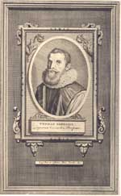
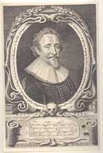
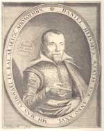
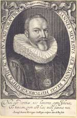
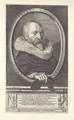

Adelaar in de wolken. De Leidse jaren van Josephus Justus Scaliger 1593-1609
Samenstelling: Paul G. Hoftijzer & Kasper van Ommen
| 5.1 | Thomas Erpenius (1584-1624), anonieme kopergravure, ca. 1700. 286 x 182 mm. |
| Uit: Fundatoris, curatorum et professorum Academiae Lugduno Batavae effigies (Leiden: Pieter van der Aa, [1716]). UBL, Prentenkabinet Sin 27976. | |
|  | |
| 5.2 | Hugo de Groot (1583-1645), kopergravure door Michiel Jansz van Miereveld, |
| 1632. 265 x 170 mm. UBL, Prentenkabinet Sin 11644. | |
|  | |
|
|
|
| 5.3 | Daniel Heinsius (1580-1655), kopergravure door Willem Swanenburgh, ca. 1607. |
| 178 x 140 mm. UBL, Prentenkabinet Sin 13006. | |
|  | |
|
|
|
| 5.4 | Johannes Meursius (1579-1639), kopergravure door Simon de Passe, 1631. 152 x |
| 102 mm. UBL, Prentenkabinet Sin 20661. | |
|  | |
|
|
|
| 5.5 | Petrus Scriverius (1576-1660), kopergravure door J. van de Velde naar een |
| schilderij van Frans Hals, 1626. 270 x 155 mm. UBL, Prentenkabinet Sin 27976. | |
|  | |
| vorige pagina | volgende pagina |